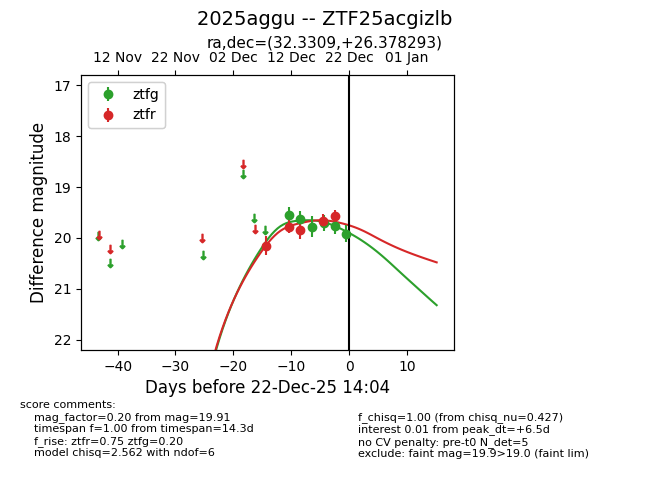
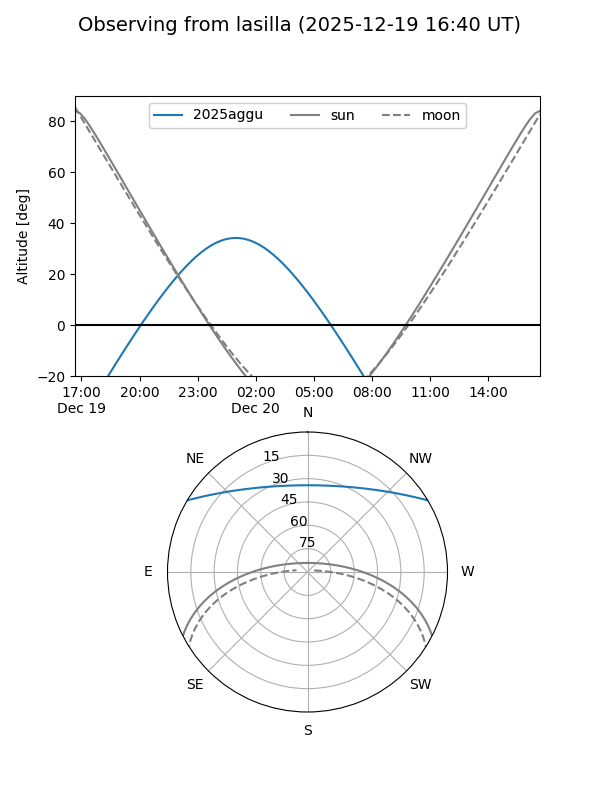

2025aggu
Target 2025aggu at 2025-12-18 11:18
Aliases and brokers:
FINK: fink-portal.org/ZTF25acgizlb
Lasair: lasair-ztf.lsst.ac.uk/objects/ZTF25acgizlb
ALeRCE: alerce.online/object/ZTF25acgizlb
TNS: wis-tns.org/object/2025aggu
YSE: ziggy.ucolick.org/yse/transient_detail/2025aggu
alt names
ZTF25acgizlb (ztf,fink_ztf)
2025aggu (tns,yse)
Coordinates:
equatorial (ra, dec) = 32.3309,+26.37829
equatorial (HMS+DMS) = 02:09:19.41,+26:22:41.85
galactic (l, b) = (143.8679,-33.30738)
Photometry
last ztfg=19.78, ztfr=19.84
3 ztfg, 3 ztfr detections
Lightcurve

Visibility


Additional plots